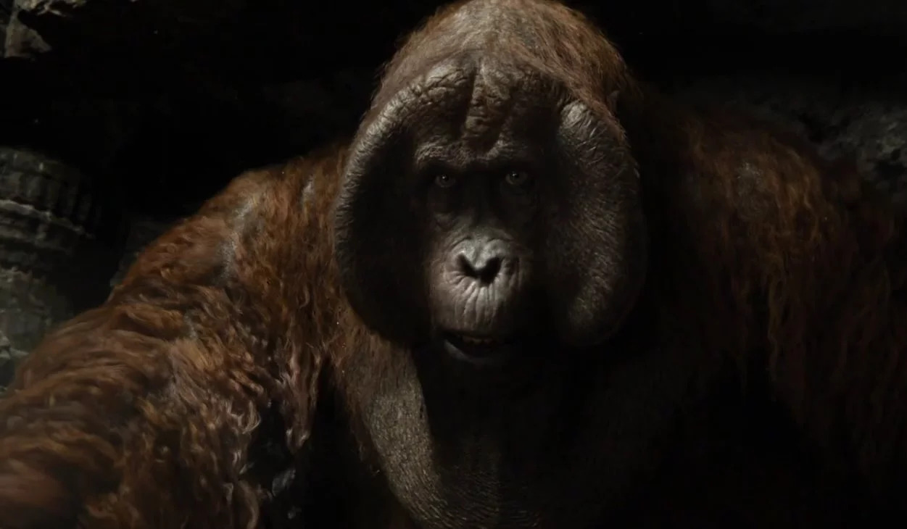

Disney's Kingdom
Welcome to my animal kingdom of animals base in Disney platform. The purpose of this webpage is for kids to
learn the history of how some these characters became to be and what type of animals are they and their species
histories.
Bears
- Winnie-the-Pooh
Winnie-the-Pooh is a compilation of children's tales written by A.A. Milne, first published in 1926. These episodic stories,
along with its sequel, The House at Pooh Corner (1928), were crafted by Milne for his young son,
Christopher Robin. The characters were inspired by Christopher Robin's toy animals, with the young boy himself
represented in the tales as the kind-hearted overseer of the animals. One of my favorite quotes from Pooh say
"I'm just a little black rain cloud, hovering under the honey tree." What this quote means to me a getting under tree can
protect you from the rain.
Winnie-the-Pooh Story
- Koda
Brother Bear draws inspiration from Inuit culture and beliefs, particularly shamanism.
Inuit spirituality revolves around shamans who control spirits, sometimes taking animal
forms like Kenai does in the film. They believed in appeasing spirits of weather and animals
to avoid harm. Shamans also sought to cure sickness through spiritual contact, but were powerless
against deadly diseases introduced by Europeans and Americans. One of the most known lyric of the song
brother bear is known for: ♪ Tell everybody I'm on my way and I'm loving every step I
take with the sun beating down,yes I'm on my way and I can't
keep this smile off my face ♪ Click here to listen
If you want to learn more about the brother bear movie base on check this reseach written from
a student at Kennesaw State University. Click Here!
Elephants
- Dumbo
The story of Dumbo is thought to be loosely inspired by Jumbo, a male African Bush
elephant born in Sudan in 1860. After being captured and sold to an Italian animal dealer,
Jumbo was imported to France and later transferred to London Zoo in 1865. He gained popularity
as a favorite attraction, offering rides to visitors, especially Queen Victoria's children. For more
information how Dumbo became to be click on the link.
Lions
- Simba
The story of Sundiata Keita, also known as the Lion of Mali, serves as the inspiration behind
"The Lion King." Sundiata founded the Malian Empire, which became the largest kingdom in West Africa.
He ruled from 1235 to 1255, expanding his empire from the Atlantic coast to the Niger River. Sundiata's
great-nephew, Mansa Musa, is famous for being the richest person in history, with an estimated fortune
of $400 billion adjusted for inflation. During his pilgrimage to Mecca, Musa's generosity was legendary;
he built mosques and distributed so much gold that it devalued the price of gold for the next 25 years. If
you want to learn more behind the story how the lion king became to be click on the
link.
- Nala

The name Nala in Disney's The Lion King hints at her role in Simba's story and her fate at the end of
the movie. The film draws inspiration from Shakespeare's Hamlet and tells the story of Simba's journey
from exile back to reclaiming his throne. Nala, Simba's lifelong friend, aids him in this journey.
The name "Nala" reflects her transformation throughout the story rather than describing her initial
character. This attention to detail in character names is characteristic of Disney's '90s Renaissance
films, adding depth to the narrative beyond just beautiful animation. To learn more click here!
Monkeys
- Rafiki
Rafiki, a character from The Lion King, is modeled after the mandrill, the largest species of monkey.
Mandrills are known for their colorful faces, with males having distinctive blue and red skin. Their
vibrant colors become brighter when excited. Mandrills also have long canine teeth, which they may
display as a friendly gesture.To learn more about mandrills click here.
- Abu
In the live-action remake of Aladdin, Abu appears as a computer-animated tufted capuchin monkey,
serving as Aladdin's sidekick similar to his animated counterpart. Capuchin monkeys are primarily
found foraging for various foods in the understory to the forest floor, including fruits, insects,
plant matter, and even smaller animals like frogs and birds. They exhibit social behaviors such as
communication about food discovery and hierarchical feeding, where dominant individuals get priority.
However, subordinate capuchins may employ tactical deception to secure food. Known for their intelligence,
capuchin monkeys also display tool use, employing sticks to reach for food and rocks to crack open nuts To learn
mora about capuchin monkeys click here.
- King Louie

King Louie is a fictional character from Disney's The Jungle Book, depicted as an orangutan who leads
other jungle primates and seeks to gain human-like knowledge from Mowgli, particularly the ability to use fire.
Unlike characters from Rudyard Kipling's original works, King Louie is an original creation for the film. Orangutans,
from which King Louie is inspired, are solitary creatures living in lowland forests. They primarily feed on wild fruits
and nest in trees for sleep and rest. Adult male orangutans can weigh up to 200 pounds, with flanged males exhibiting
prominent cheek pads and a throat sac used for vocalizations. Notably, unflanged males can undergo a biological transformation
into flanged males, a unique phenomenon among primates with reasons yet to be fully understood.To learn more about orangutan click here.
Fishes
- Flounder
The character Flounder from Disney's "The Little Mermaid" is often misidentified as a flounder,
but is actually more likely an angelfish or a similar reef fish due to its vibrant coloring.
Angelfish are named for their shape resembling that of an angel when viewed from the side,
particularly their elongated fins. There are distinctions between marine and freshwater angelfish,
with marine angelfish belonging to the Pomacanthidae family and freshwater angelfish to the Cichlidae
family. Popular types of angelfish include queen, king, emperor, flame, yellowtail, and French angelfish.
To learn more about angelfish click here.
- Marlin
Marlin, a clownfish living in the Great Barrier Reef, had a mate named Coral and numerous offspring,
all but one of whom were eaten in a barracuda attack. Marlin, now overprotective of his surviving child,
Nemo, resides in a symbiotic relationship with a sea anemone. Clownfish provide protection and help keep
the anemone clean, while the anemone offers shelter and food scraps. Only specific anemone species are
suitable hosts for clownfish, and their mucus layer protects them from the anemone's stinging tentacles.
Other fish are deterred from the anemone due to its defensive capabilities.To learn more about Marline
click here.
- Dory
Dory, known for her forgetful nature in the "Finding Nemo" franchise, is a blue tang scientifically named
Paracanthurus hepatus, native to the Indo-Pacific coral reefs. They typically weigh around one pound and
measure 10 to 12 inches in length. Blue tangs are easily recognizable due to their vibrant royal blue and
canary yellow colors, though juveniles are initially bright yellow and adults may display deeper blues and
violets when stressed. Despite their harmless appearance, they can defend themselves with venomous spines on
their tails when threatened. Consumption of blue tangs can lead to ciguatera poisoning, caused by toxins from
dinoflagellates they consume, resulting in symptoms such as vomiting, diarrhea, and dizziness. To learn
more about Dory click here.